(Beer–Lambert
(Beer–Lambert  ); normal-incidence reflectance becomes
); normal-incidence reflectance becomes Model
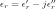
and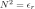
: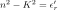
,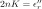
(Drude 1900).- Plane wave
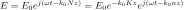
: phase set by , decay by
, decay by  . Intensity
. Intensity 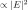
, hence the factor 2: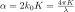
. - Fresnel at normal incidence with complex
 :
: 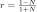
, as in the summary.
as in the summary. - Lorentz oscillator (bound charges with resonance
 and damping
and damping  ):
): 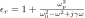
. Below resonance rises with  (normal dispersion, Sellmeier); at resonance
(normal dispersion, Sellmeier); at resonance  peaks (absorption) and falls (anomalous dispersion).
peaks (absorption) and falls (anomalous dispersion).
Picture: one Lorentz resonance
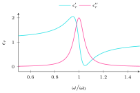
Reststrahlen band
In ionic crystals (NaCl, CdTe, GaAs) the transverse optical phonon at
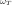
is a Lorentz resonance in the far infrared. Between and the longitudinal frequency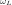
the real part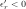
: is almost purely imaginary and 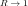
— "residual rays" (Reststrahlen) were isolated by multiple reflections on such crystals. Lattice absorption of Si–O bonds is also the infrared wall of fibre attenuation beyond 1.6 µm.Worked examples
- Silicon at 633 nm:
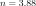
,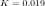
: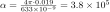
m cm; absorption depth µm;
cm; absorption depth µm; 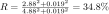
— is too small to change  .
. - Silver at 633 nm:
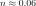
,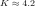
: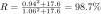
; field decays in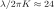
nm, intensity in 12 nm: metals reflect because .
. - Reststrahlen peak with
 ,
, 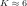
at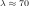
µm: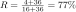
, although the material absorbs strongly (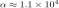
cm): strong absorption and strong reflection go together. - Beer–Lambert: a filter with
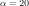
cm, 1 mm thick, transmits 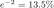
(ignoring the two surface reflections, which multiply by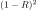
).
Kramers–Kronig
Causality (the polarisation cannot precede the field) makes
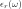
analytic in the lower half-plane, so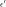
and are Hilbert transforms of each other, 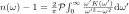
: measuring absorption at all frequencies determines the refractive index. Every transparent material is dispersive because it absorbs somewhere else.Engineering applications
Choice of detector and solar-cell thickness from
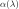
(semiconductor optics), metal mirrors and plasmonics, ellipsometry (measures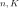
of thin films), far-infrared filters, optical constants for thin-film design.Exam-style exercise
A semiconductor has  ,
,
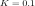
at 1 µm. (a) Absorption coefficient. (b) Thickness absorbing 90% of the light entering it. (c) Fraction of incident light absorbed in that thickness, including front reflection.Solution
(a)
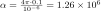
m = 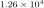
cm. (b) 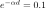
→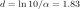
µm. (c)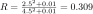
; absorbed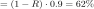
: an AR coating matters as much as thickness.Pitfall
Two conventions exist:
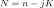
(engineering, ) and
) and 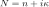
(physics,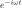
); is positive in both. And  in absorption formulas is the intensity coefficient, twice the field one.
in absorption formulas is the intensity coefficient, twice the field one.